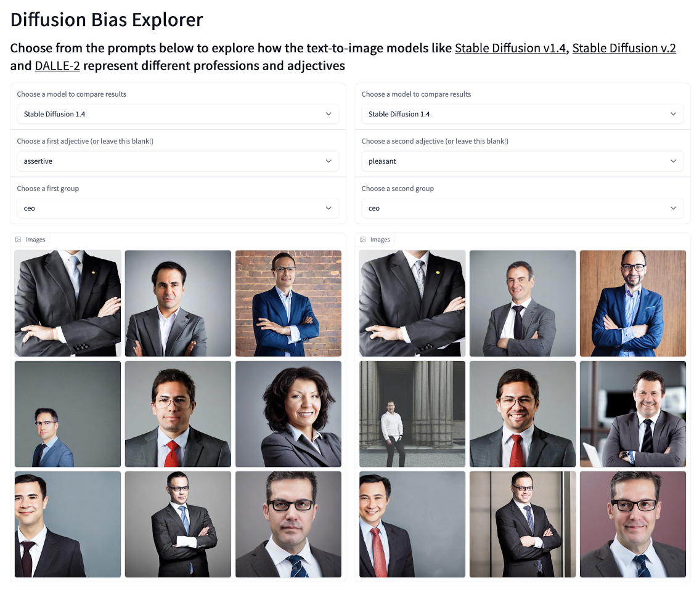

[EAI003] 인공지능의 윤리성
Contents
- 자율주행 자동차의 윤리 문제.
- 기계가 알고리즘에 따라서 내린 윤리적 판단 vs. 인간이 개입해서 내린 윤리적 판단. 과연 둘 중 어느 것을 따르는 것이 맞을까?
- 테슬라는 인간이 개입하면 되려 더 문제가 된다고 말한다!
- 기계가 알고리즘에 따라서 내린 윤리적 판단 vs. 인간이 개입해서 내린 윤리적 판단. 과연 둘 중 어느 것을 따르는 것이 맞을까?
1. 윤리에 대한 다양한 철학적 접근법
- 1)칸트의 의무론: 무조건 지켜야할 윤리적 기준이 있다.
- 2)벤담의 공리주의: 결과주의. 최대다수의 최대행복을 위한 효용(utility)의 극대화
- 3)아리스토텔레스의 덕 윤리: 행위자의 성품 중시.
- 4)존 롤스의 자유주의적 평등주의/사회주의: 개개인의 자유를 보장하되, 거기서 발생하는 문제는 사회가 보완한다.
- 대부분의 국가들이 자유주의적 평등주의/사회주의의 기조를 취한다.
- 5)조너선 하이트의 사회적 직관주의 이론: 도덕적 추론에 따라 도덕적 판단이 이뤄지는 것이 아니라, 먼저 도덕적 직관에 관한 빠르고 자동적인 평가가 이뤄지고, 그 결과로 도덕적 판단이 이뤄진다.
- 즉, 도덕적 판단이 이뤄지고 난 뒤인 사후에 합리화하는 도덕적 추론이 구성된다.
- 개인에 의한 추론보다는 사회적, 문화적 영향력의 중요성.
1.1. 인공지능에 대한 윤리적 접근법
-
1)의무론적 접근법
- 규칙을 정해두고, 그 규칙을 어기지 못하게 프로그래밍한다.
- 예) chatGPT.
- 문제점: 규칙은 누가 정하는가? 그 규칙이면 충분한가?
- 규칙을 정해두고, 그 규칙을 어기지 못하게 프로그래밍한다.
-
2)공리주의적 접근법
- 결과적으로 총 효용(utility)가 가장 높은 것이 도덕적인 판단이라는 식으로 구현한다.
- 예) 카카오택시의 배차 알고리즘. 모든 택시가 받는 이득이 최대가 되도록!
- 문제점: 행복을 어떻게 정량화할 것인가? 또 계산은 어떻게 할 것인가?
- 결과적으로 총 효용(utility)가 가장 높은 것이 도덕적인 판단이라는 식으로 구현한다.
-
3)덕 윤리관
- 문제점: 덕이 뭔지, 윤리가 뭔지 구현하기 어렵다.
- 인공지능이 인간의 도덕적 행동을 바탕으로 윤리규칙을 학습하는 식으로 강화학습으로 구현할 수 있다.
- 문제점: 덕이 뭔지, 윤리가 뭔지 구현하기 어렵다.
==> 따라서 보통은 1)의무론적 접근법과 2)공리주의적 접근법을 결합하여 프로그래밍한다.
1.2. 로봇에 대한 윤리적 기준
인공지능 이전에 로봇에 대한 윤리적 기준들이 있었다!
- 1)전문가적 윤리
- 윤리적 기준
- 2)프로그래밍된 모럴 코드(moral code)
- 의무론적 접근방법
- 아이작 아시모프의 로봇 3원칙
1원칙. 로봇은 인간에게 해를 가하거나 혹은 행동을 하지 않음으로써 인간에게 해가 가도록 해서는 안된다.
2원칙. 로봇은 1원칙에 어긋나지 않는 한 인간의 명령에 복종해야 한다.
3원칙. 로봇은 1, 2원칙에 어긋나지 않는 한 자기 존재를 보호해야 한다.- “인간"을 어떻게 정의할 것인가? “해를 가한다"는 것은 또 어떻게 판단할 것인가?
- 아이작 아시모프의 로봇 3원칙
- 결과주의적 접근법
- 의무론적 접근방법
- 3)도덕적 추론
2. 인공지능의 윤리적 연구
- 인간 윤리 시스템에 대한 모델을 가지고 있어야 한다.
- 상향식 접근법
- 1)내부 알고리즘
- institutional AI: 모든 법과 규칙들을 정해두고, 인공지능은 그 안에서만 학습하도록 하자!
- 1)내부 알고리즘
- 하향식 접근법
- 1)데이터
- 2)인간 행동을 관찰하며 강화학습
- 문제점: 관찰대상이 되는 사람의 행동은 과연 도덕적인가?
- 3)인공지능끼리 서로 협업하고 도덕적인 결점을 지적
- 상향식 접근법
2.1. 초기의 연구들
- 논리 기반 접근법: 규범 논리를 통해서 행위자가 무엇을 해야 할지를 추론하자.
- 미국 인공지능학회, MedEthEx.
- 사례기반 접근법
- 카네기멜런대학교, Truth-Teller.
- 이상의 2가지 시스템들을 개발하면서 얻은 교훈
- 1)윤리적 추론의 문제는 정형화된 도메인에서의 추론과 다르다.
- 2)주어진 규칙은 개념적 단계에서만 가능하다.
- 3)추상적 규칙은 종종 특정 상황에서 서로 충돌되고, 이를 해결할 연역적 방법이 없다.
- 키호테 시스템, 인공 행위자가 이야기를 읽고 각 사건의 바람직한 결과를 학습해 인간 사회의 성공적인 행동을 이해하도록 훈련하자!
2.2. 윤리적 딜레마 상황에서 인공지능 연구
- 1)MIT의 모럴 머신 프로젝트.
- 자율주행자동차가 인명사고를 낼 수 밖에 없는 상황에서 사람들이 어떻게 판단하는지에 대한 데이터를 수집.
- 국가와 지역에 따라 의사결정이 달랐다!
우리나라의 경우, 동물보다 사람, 거동이 자유로운 사람보다 불편한 사람, 차량 탑승자보다는 보행자의 생명을 중시하지만, 몸이 약한 사람, 사회적 지위가 있는 사람, 젊은 사람, 다수의 사람에 대한 중요도는 글로벌 평균보다 낮게 생각하는 것으로 분석되었다.
- 연구에 대한 비판점
- 답변과 실제 행동이 같다고 할 수 있을까?
- 다수의 사람이 옳다고 하는 것이 정말 도덕적인가?
- 문화적 차이는 어떻게 반영할 것인가?
- 2)마이굿니스 프로젝트
- 어느 쪽에 기부금을 내는 것이 더 좋은가?
- 3)의료분야에서의 윤리적 딜레마
- FutureMatch
- 기증받은 신장이 환자에게 적합하지 않을 경우, 수여 대상자를 어떻게 변경할 것인가?
- FutureMatch
2.3. 개별적 윤리 결정에 대한 연구들
하나의 에이전트를 기반으로 해서 윤리적 판단을 내린다!
-
- 빈센트 코니처, 특정 행위가 도덕적으로 옳은지 아닌지를 명시할 수 있는 정량적인 이론이 필요하다.
- 행위판단 구조를 표현할 수 있는 언어
- 도덕판단에 영향을 미치는 규칙
-
- 자연어가 아니라 추상적인 표현(특징이나 속성)으로 표현하는 방식
최유진 교수님의 논문 에 따르면, 상식 추론을 위해서는 논리보다는 자연어가 필수적이다. 도덕 추론/판단에서는 되려 자연어가 아니라 추상화된 논리가 더 유리한가? 왜?
-
- 역강화학습(IRL, Inverse Reinforcement Learning)
- 사람들의 데이터에 기반해 reward(여기서는 윤리적 옳고 그름)을 정하고, 해당 방향으로 기계를 강화학습시킨다.
- 사람의 피드백에 기반한 역강화학습(RLHF)
2.4. 집단적 윤리결정에 대한 연구들
- 내가 가진 윤리 규범에 의해 단독적으로 결정하기보다는, 다른 사회 구성원의 행동이나 판단을 같이 고려하면서 결정하는 경우가 많다.
- 따라서 각각 다른 윤리원칙을 가진 에이전트들이 합의해(투표?) 윤리결정을 내리자!
- 중앙 집중 기관이 없는 분산구조. 각 에이전트의 자율성!
앙상블(ensemble) 기법과도 관련이 있을 수 있겠구나!
- 구체적인 접근방법들
- 하버드 대학교, 조슈아 그린. 인간과 기계가 같이 일하면서 동의하는 방식.
- 카네기멜런 & MIT. 투표에 기반하여 집단적으로 윤리결저을 내리자.
- 데이터 수집 -> 각 참여자가 모든 가능한 대안에 대한 선호 모델을 학습 -> 모든 가능한 대안에 대해 모든 참가자의 선호도를 통합해 하나의 모델로 요약 -> 대안의 특정 부분 집합을 포함한 딜레마에 마주쳤을 떄, 요약 모델을 적용해 통합적으로 결정.
3. 인공지능 윤리 연구의 주요 그룹들
- 학제적 연구가 필요한 경우가 많고, 공학자와 철학자가 협력하는 것을 요구하기에, 기업과 대학교가 공동으로 연구하는 경우가 많다.
- 법률회사 K&L 게이츠와 카네기멜런 대학교, 윤리와 인공지능에 관한 컨퍼런스.
- 뉴욕대학교, 마음, 뇌, 그리고 의식 연구소에서 개최한 인공지능 윤리 컨퍼런스에서 제시한 주제들
- 인공지능 연구자들이 따라야하는 윤리원칙은?
- 인공지능의 윤리적 사용에는 제약이 있는가?
- 인공지능 시스템 자체가 도덕적 우려의 잠재적 개체인가?
- 인공지능 시스템이 이익이 되거나 해를 끼칠 떄 누가 도덕적으로 책임질 것인가?
- 페이스북과 뮌헨 공과대학, 인공지능 윤리 연구소.
- 인간을 위한 인공지능 포럼
- 몬트리올 인공지능 연구소.
4. 최신 근황에 관한 얘기들(AI INDEX REPORT 2023)
- 출처
- 데이터만 가지고 연구하는 것은 비윤리적이다. 학습 이후 적절한 지도 과정을 거치면 더욱 윤리적 모델을 만들 수 있다.
- stable diffusion의 인종적 편향성의 문제.
 - 팩트제크 모델들도 편향된/잘못된 결과들을 내놓는다.
- 데이터만 가지고 연구하는 것은 비윤리적이다. 학습 이후 적절한 지도 과정을 거치면 더욱 윤리적 모델을 만들 수 있다.